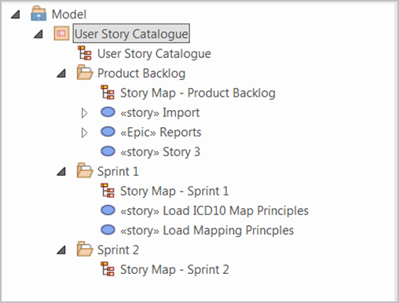

Topic created to migrate Rapid Content into the AG
Draft
The User Story elements and diagrams / artefacts are held in a catalogue package structure within the analysis model. They
are organised into a package structure based on the Product Backlog and proposed Sprints. The Backlog package contains the
user story elements that have not been assigned to a Sprint. The Sprint packages can contains the user story elements and
diagrams that have been allocated to that Sprint along with its Story Map.
user story catalogue package organisation

Organisation of a User Story Catalogue Package and the entities it may contain